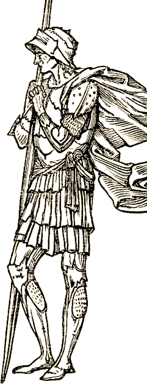

Your Computer Dresses You Funny
Text is great. You can do things with text you couldn’t hope to do with graphics – or that you wouldn’t consider worth the time spent. In a text game, you can actually dress yourself, more or less anyway you like. That’s both great, and fraught with wild problems that would not occur to the normal [sane] person.
In classic interactive fiction games, you can put clothes on your body. When someone looks at you they see a listing of all the things you are wearing, in no particular order. Such as in the example below:
look at Mindi
Mindi The Blonde is a young female elf with short blonde hair, gray eyes, and pale skin.
Mindi is wearing red leggings, a nose ring, yellow breeches, a silver bracelet, vambraces, emerald earrings, red socks, a corsage, a green ribbon, high gold boots, an embroidered green and gold pouch, a quiver, an oblong shield, an ornate scabbard, a red cloak, a tasseled silver hat, a headband, a dragon-shaped ivory belt buckle, a silver band, an amulet, a purple backpack, a pearl hair comb, a leather choker, and a boot sheath.
If you got the impression that Mindi looks like a walking carnival, you would be right. Your brain struggles to create some sort of mental image of what she might look like, filling in pieces top, bottom and middle as they come up, but it is really difficult to visualize what the whole might appear like. In fact, what you likely didn’t notice is that Mindi is topless.
And you ask… well, what are you at Skotos going to do about it? Well, thanks for asking. I’m sure what is first on your mind – yes, in the Skotos universe you will easily notice that Mindi is topless. While players will be able to turn off short descriptions of other players. The fact that she is topless will be apparent when you see her walk into a room in her short description.
Mindi enters the room; she is a topless female elf.
George enters the room; he is a human, dressed mostly in gray leather.
Maynard enters the room; he is a farie dressed in colorful silks.
You get the idea. You can also look at the character and get more description of themselves and their garb.
look at George
George Bartholomew is a middle-aged human who wears his graying hair and beard cut short, he has blue eyes and ruddy skin.
George is wearing a sleeveless, knee-length, gray leather tunic; a white silk undertunic; a black baldric hung with a rapier; black leggings; and gray leather ankle boots.
That’s the important stuff, now if you want to see all the little details, you can look more closely at George:
look closely at George
George Bartholomew is a middle-aged human who wears his graying hair and beard cut short, he has blue eyes and ruddy skin.
George wears a thin black leather band on his head; a ruby stud in his left ear; a long-sleeved, white silk undertunic; grey leather tunic lacing up the sides and trimmed with black rabbit fur; a wide black alligator leather belt; [attached to the belt is a small black velvet pouch, and gray hogskin gloves]; black close-fit silk leggings; and soft gray leather ankle boots with silver buckles.
What you don’t see is that George is also wearing underwear, and has a bandage around his abdomen from a minor wound he took yesterday in a duel, because these things are covered by his clothing.
What we’ve tried to do is order what you see into what you would notice first – bright and large items will take priority, and other items will be listed later. Also, we usually see people from head to toe, so apparel will appear in this expected order. If someone is wearing chartreuse leggings, and all other garments are brown, you are going to see the leggings first, then the next largest item of clothing, or maybe a prominent hat. |
|